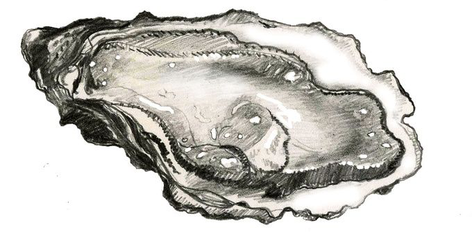
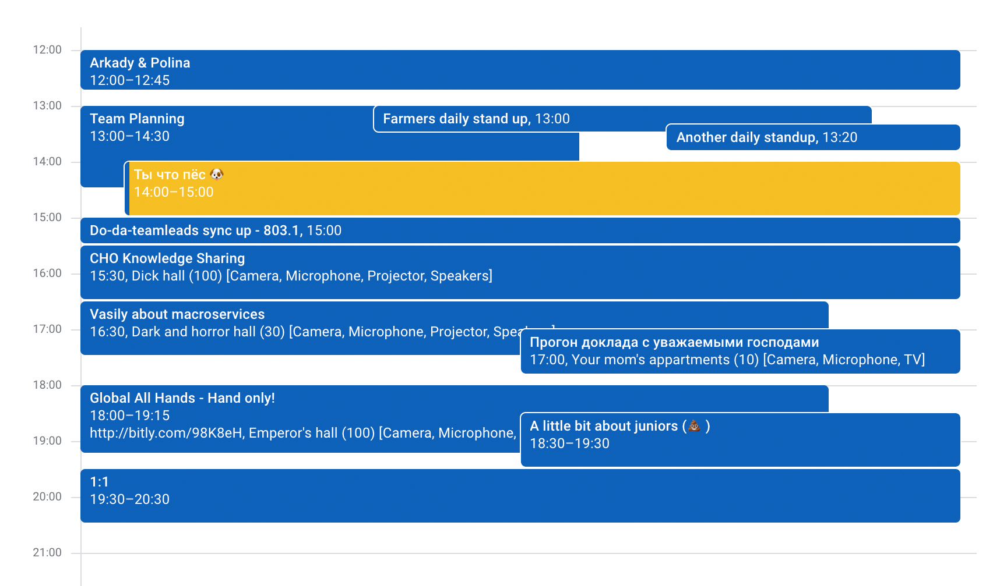

про
Мечты, Счастье и кошачью будку
МЕЧТА, -ы; мн. род. нет; ж.
1. Мысленный образ чего-л., представление о чём-л., сильно желаемом. Заветная м. Давняя м. М. о счастье. Лелеять, беречь мечту. М. провести отпуск на море. Осуществить мечту.
2. Предмет желаний, стремлений; желаемое событие. Хороший муж - м. каждой женщины. Иметь собаку было моей мечтой. Стать моряком - м. ребёнка. Красивое платье - м. девушки. Исполнилась м. М. не сбылась. // Разг. О чём-л., являющемся пределом желаемого для кого-л., самым желанным, почти не осуществимым. Не подарок, а м. Голубая м.
...
МЕЧТА, -ы; мн. род. нет; ж.
- конкретность желаемого (многие детали и частности);
- слабая выраженность конкретных путей к реализации;
- эмоциональная насыщенность образа;
- соединение мечты с чувством определённой уверенности в её осуществимости;
- творческий характер образа;
- позитивное и конструктивное направление;
I. Детство

Диванная мечта
II. Юность
Carlo Domeniconi
Koyunbaba (или Seyit Ali) - согласно турецким религиозным поверьям - имя святого XIII века, «потомки которого по сей день населяют каменистую, полупустынную дикую местность на юго-западе Турции». Такое же название носит и маленькое селение на востоке страны
Устричный парадокс
III. Зрелость
как найти друзей
собачья кошачья будка